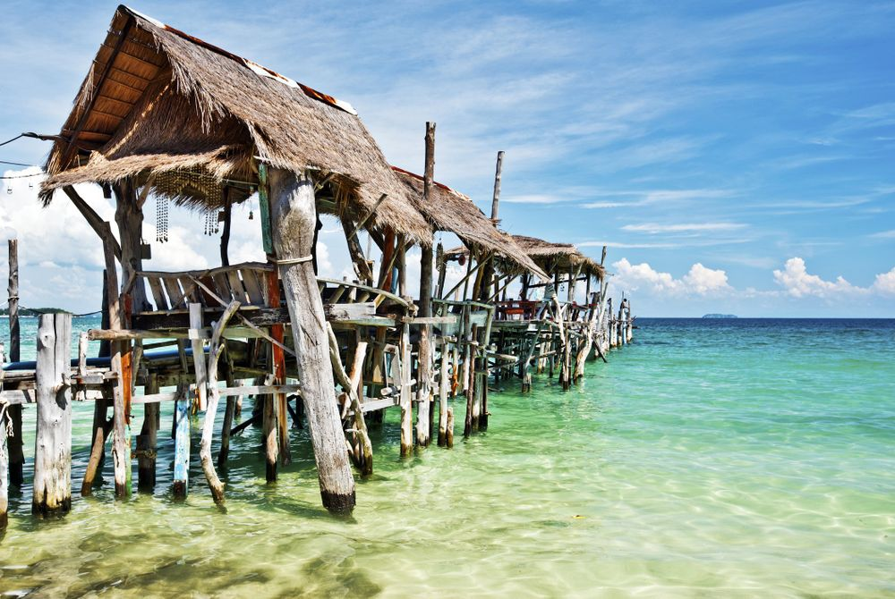

Op slechts vier uur reizen van Bangkok ligt het meest zonnige eiland van Thailand: Koh Samet. Op dit piepkleine tropische eilandje kun je onbeperkt genieten van zon, zee en strand. Koh Samet heeft daarnaast een bruisend nachtleven en er valt op het gebied van watersport een heleboel te doen.
Bangkok is een geweldige stad, maar als je de drukte wil ontvluchten dan vind je maar op weinig plekken echt rust. De oplossing is het serene eilandje Koh Samet, dat vlak voor de kust ligt. Hier kun je geweldig luieren en
Het is bijna te mooi om waar te zijn. Op slechts luttele uren reizen van de drukke hoofdstad Bangkok ligt het hemelse Koh Samet. Dit kleine eiland in de Golf van Thailand is een heerlijke bestemming om lekker te luieren en te genieten van de Thaise zon. Koh Samet is namelijk sinds 1981 een beschermd natuurpark, en daarom niet ten prooi gevallen aan het massatoerisme. De infrastructuur bestaat nog uit zandweggetjes en je zult hier dan ook geen grote hotels tegenkomen.
Toch is het raadzaam om je verblijf op Koh Samet een beetje handig te plannen, want in de weekenden kan het druk worden. Veel rijke Thai en expats uit Bangkok trekken dan naar het eiland en de prijzen voor accommodaties schieten omhoog. Bereid je voor op een zee vol waterscooters en constante harde discomuziek. Doordeweeks is het eiland over het algemeen een stuk relaxter.
Koh Samet is een echt bounty paradijsje. Dankzij de gunstige ligging heeft het eiland maar weinig hinder van het regenseizoen, en dat betekent dat je er het hele jaar door heerlijk vakantie kunt vieren. Het eiland heeft 14 hagelwitte zandstranden en wordt omringd door kristalhelder water. Je kunt er daarom hele dagen zonnen, zwemmen en watersporten. Het meest levendige strand is Hat Sai Kaew, ook wel Diamond Beach genoemd. Hier is het altijd gezellig druk: Je vindt er de mooiste strandresorts en genoeg restaurants, bars en winkels langs de kustlijn om je een hele dag te vermaken.
Wil je liever het strand voor jezelf? Zoek dan het serene Ao Phai op, waar je in eenvoudige, maar sfeervolle strandhutjes kan overnachten. Ook leuk: op het strand van het mondaine Ao Phrao zijn de mooiste zonsondergangen van het hele eiland te zien, dus blijf zeker hangen tot de zon achter de horizon is verdwenen.
Het water rondom Koh Samet is vrij ondiep en daarom uitermate geschikt om in te snorkelen. Onder water valt een hoop kleurrijk koraal te zien, en zwem je tussen de zeesterren, roggen, (ongevaarlijke) haaien en barracuda's. De beste plek om te snorkelen is bij het strand van Ao Phrao, maar je kunt ook een dag mee op een boot en onderweg stoppen bij alle mooie snorkelplekjes rondom het eiland.
Wie liever wil duiken kan trouwens ook prima op Koh Samet terecht. Er zijn twee goede duikscholen waar je je PADI kan halen, en voor de geoefende duikers is een excursie naar de duikspot bij Hin Pholeung een echte aanrader. Je hebt daar zelfs kans om te zwemmen met walvishaaien.
Behalve onder water, valt er ook een hoop óp het water te doen. Zo kun je een waterscooter huren, windsurfen of met een kano langs de kustlijn peddelen. Ten noorden van Hat Sai Kaew kun je uitstekend windsurfen, en het rustige water langs de oostkant van het eiland is zeer geschikt om te kanoën.
Er zijn stranden op Koh Samet waar je je bijna op een onbewoond eiland waant, maar Koh Samet kent tegelijkertijd ook een bruisend nachtleven. In veel restaurants worden ’s avonds de tafels aan de kant geschoven, komen de emmertjes met sterke drank tevoorschijn en gaat de muziek een paar decibel harder. Op de boulevard van Hat Sai Kaew wordt het grootste feestje gevierd. Van karaokebars tot discotheken, en van reggae bars tot spontane strandfeestjes rondom een kampvuur: voor een avondje vertier hoef je hier nooit heel lang te zoeken.

Van Amsterdam naar Thailand is het ongeveer 12 uur vliegen. KLM, EVA Air en China Airlines hebben een directe verbinding met hoofdstad Bangkok, maar doorgaans is het goedkoper om ergens over te stappen. De prijs voor een retourtje begint bij € 450, maar de reistijd kan dan wel flink oplopen.
Ko Samet ligt vervolgens ruim 200 kilometer ten zuiden van Bangkok. Met de bus of taxi doe je ongeveer drie uur over de reis naar de haven van Ban Phe, en de ferry brengt je daarna in 30 minuten naar Ko Samet.
Ko Samet meet 3 bij 7 kilometer, en is daarom makkelijk te voet te verkennen, maar wanneer je veel bagage bij je hebt kun je je door een pick-up naar je hotel of guesthouse laten brengen. Daarnaast kun je overal op het eiland een scooter huren, maar vanwege de zandweggetjes is het veiliger om te lopen.

Als het op andere eilanden (zoals Koh Samui of Koh Phangan) regent, dan kan het op Koh Samet perfect weer zijn met geen wolkje aan de lucht. Koh Samet is één van de droogste (en meest zonnige) eilanden van Thailand. En ook al ligt Koh Samet slechts enkele kilometers uit de kust: er valt beduidend minder regen dan de rest van de Rayong provincie in het oosten van Thailand. Natuurlijk kan het er wel regenen dus een verkoelende tropische bui is niet uitgesloten. De beste reistijd van Koh Samet heeft ook te maken met de temperatuur, want die kan in de zomer wel erg hoog zijn. Daarom is het er juist van oktober tot maart ideaal. Dan is het er niet té warm en is bovendien de zee mooi kalm en helder!